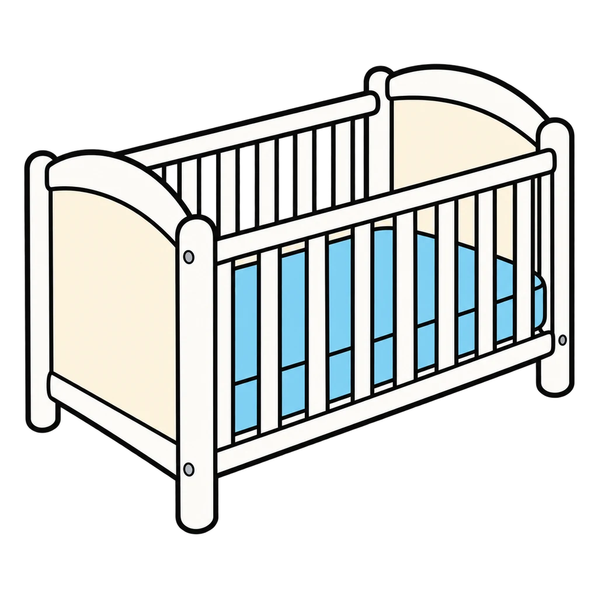
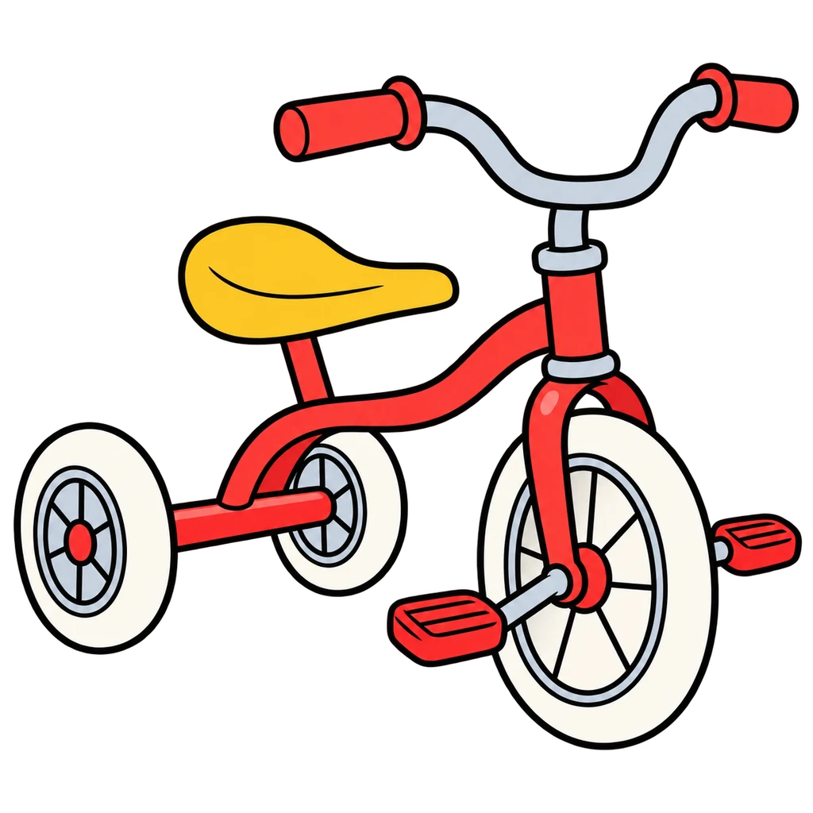
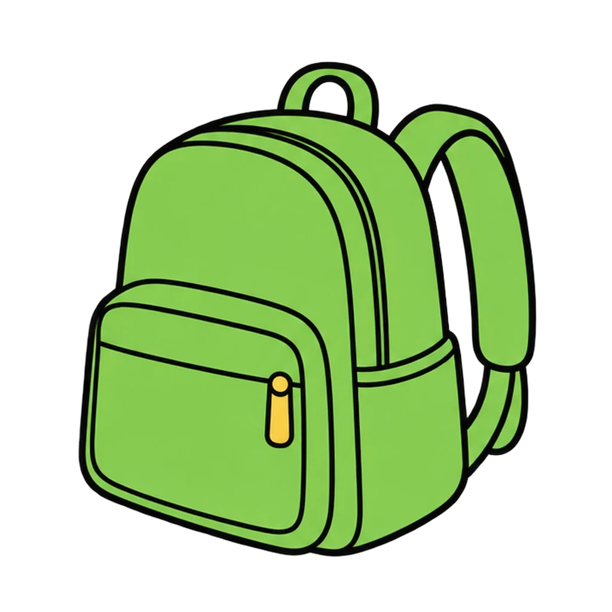
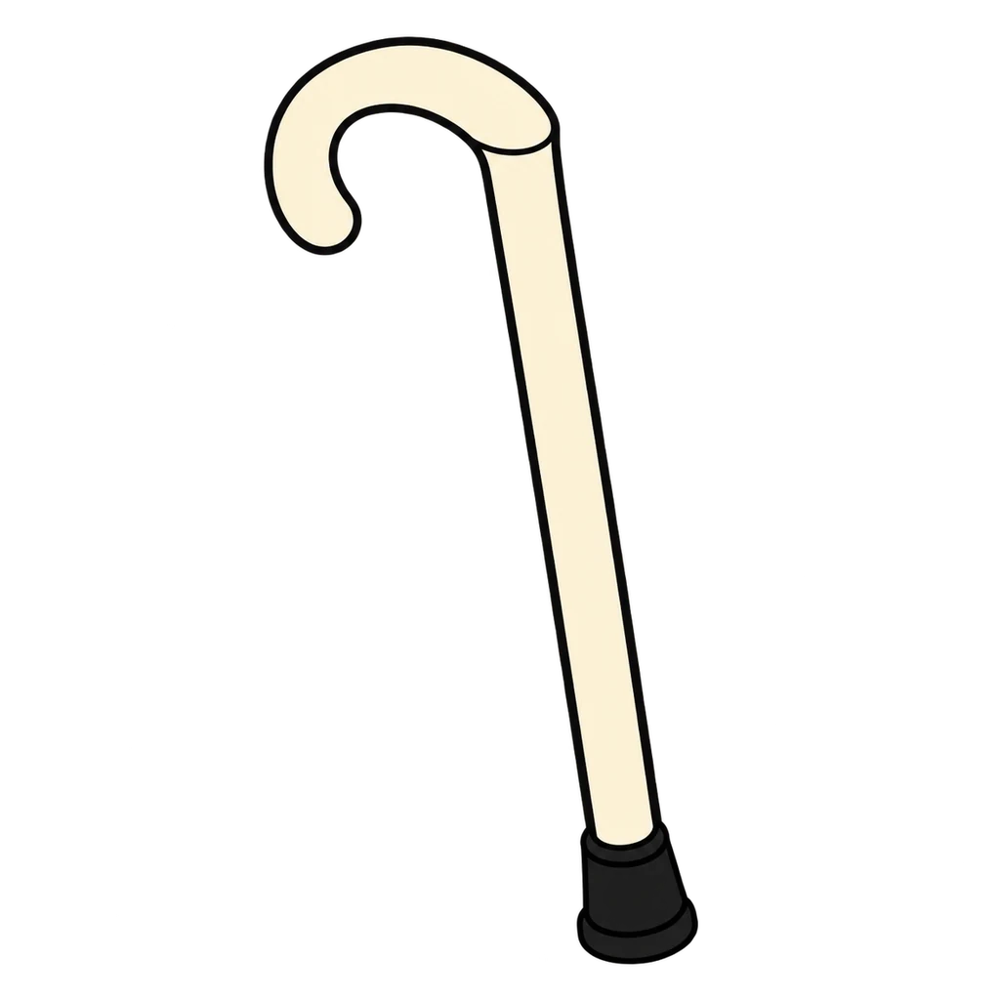

Reviews Lesson 3.1, Lesson 3.2. Stage Sort reviews Lesson 3.1 (the seven stages and the 21 sort cards) and Lesson 3.2 (the Ages and Stages chart). Use it as the warm-up before Lifespan Lightning on Lesson 3.4 Day 2, or as the retake review for the Lifespan Stages Quiz items 1 to 7 and 12. The card text is the handout's own picture-described-in-words, so a student who played the table sort will recognize every card. the streak bonus is 5 on every third correct in a row. Say "about" out loud when you introduce it: the feedback gives the ranges as the chart does, and the two boundary milestones (first words, pretend play) are deliberately not in the pool.
Stage Sort
A sort card appears as text. Tap its stage from seven buttons, each with a picture cue and age range. Then a milestone from the Ages and Stages chart appears, and you tap the age row it belongs in.
How to play
- Every stage changes all four at once. The ranges are approximate; people are not on a schedule. The four aspects: P (physical, the body), E (emotional, the feelings), S (social, the people), I (intellectual, the thinking).
- Every age on this page is "about." Children are not on a schedule, and a pediatrician, not a babysitter, decides if a child is behind.




Done
The ones to study:
Worth knowing by heart:
- The seven stages in order with an age range (Handout 03.01 Part 1)
- The four aspects: physical, emotional, social, intellectual
- The Ages and Stages chart, six rows by four columns (Handout 03.02 Part 2)
- Object permanence: knowing that objects and people keep existing even when you cannot see, hear, or touch them; about 8 months